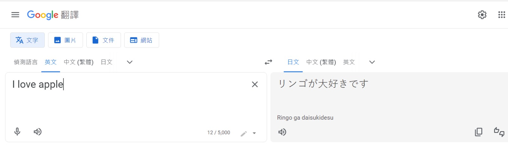
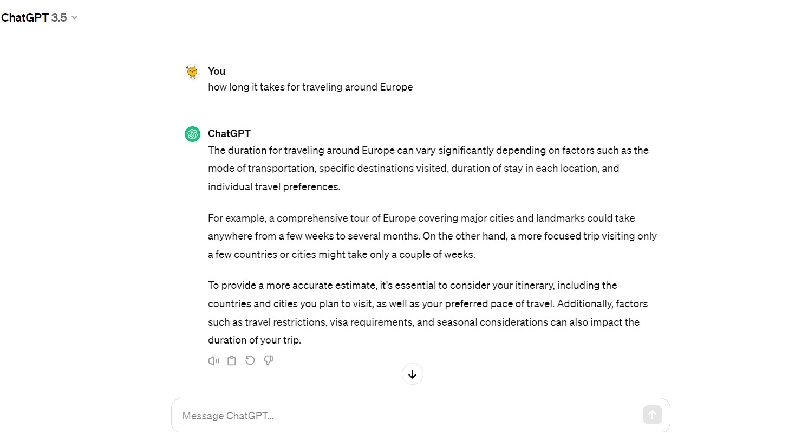
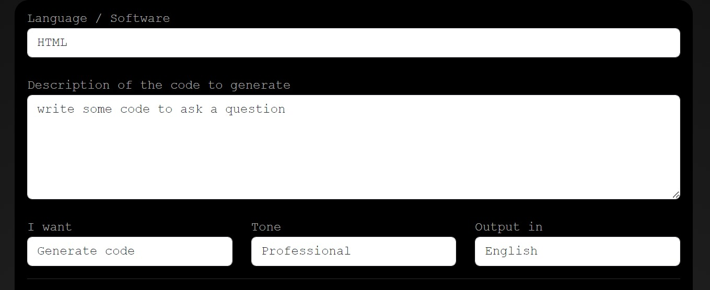
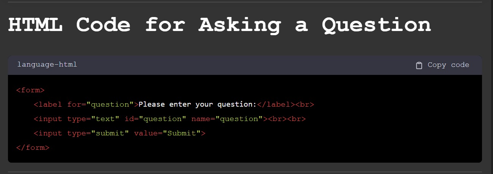

Applications of LLM
- Language translation - It provides wide coverage of all kinds of language around the world. When we input the language we know, the model will provide the new language with high accuracy that we want. Google translate is one the most widely used LLM model. The system uses the Neural Machine Translation (NMT) to process and translate text.(The future of Language Processing: Large language models and their examples 2023) The system will keep updating its data base and gather the opinion from the users, improving the translation quality.
 - GPT - This model is the most well-known of LLM in these recent years. It collects the data from all kind of sources like website, book, journal. It reduces the time we search online and provide a wide range of support. Question and answerd and content generation are the two major function people use in the GPT. People can ask any questions like 'how long it takes for traveling around Europe?'. The model will search up answer from the data base and provide you an reasonable answer. The more details from the question you can provide, the more accurate answer you can get. The other one is content generation. You can ask the model to provide a short speech about school bullying and the GPT will create the text for you.
 - AI assistants - It is mostly used by the commercial company. It provide a self-serve customer care solution. Customer can get some basic, most questioned answers. Questions like 'what is the transportation cost?' or 'when will i receive the package?' The chatbox will provide the answer which already stored in the system. This will reduce the cost and time for the real employee providing help.

- Code generation - Model like GitHub Copilot is designed for generate code in language like Python adn JavaScript. It is a great tool to generate simple and basic code which you asked for and help reducing the construction time. It can also allow beginners to learn typing code since they can turn the comments into a code.
 - Sentiment analysis - It is the process of analyzing digital text to determine if the emotional tone of the message is positive, negative, or neutral. It works well on the industry like marketing since it can gather all the comments from the customers and divide their emotion into different segement under objectively analysis. Company can improve its product or service based on the analysis like negative emotions(angry/disappointed) towards certain part of the product. The company will notice the problem and enhance the quality of the product.